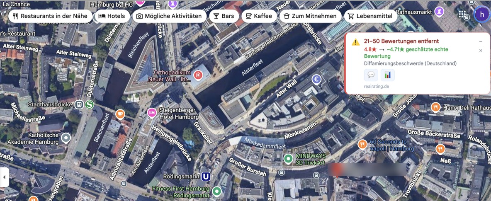
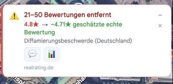

Transparenz für Google Maps Deutschland
In Deutschland können Unternehmen Bewertungen per Verleumdungsbeschwerde entfernen lassen. RealRating erkennt diese Entfernungen und schätzt, wie die echte Bewertung aussehen würde.


RealRating läuft automatisch im Hintergrund. Kein Setup, kein Klicken — einfach Google Maps wie gewohnt nutzen.
Falls ein Hinweis auf eine Verleumdungsentfernung existiert, findet RealRating ihn — auch im Bewertungs-Tab, den die meisten Nutzer nie aufrufen.
Ein Badge zeigt, wie viele Bewertungen entfernt wurden, und schätzt die Bewertung, die diese Bewertungen ergeben würden — berechnet nach der gleichen Methode wie Pieter Levels’ Real Rating Calculator.
Google Maps zeigt den Entfernungshinweis in der UI-Sprache des Nutzers — nicht immer auf Deutsch. RealRating erkennt den Hinweis unabhängig davon, auf welche Sprache Maps eingestellt ist.
Alle Zahlenformate werden unterstützt: „11 to 20“, „Two to five“, „Zwei bis fünf“, „Over 250“, „Eine Bewertung“.
Öffnen Sie das RealRating-Popup und sehen Sie jede erkannte Entfernung auf einen Blick — durchsuchbar, sortierbar, mit einem Klick kopierbar.
RealRating erfindet keine Zahlen. Die Schätzung basiert auf einer einfachen, nachvollziehbaren Rechnung — offen einsehbar und als Einordnungshilfe gedacht, nicht als Tatsachenbehauptung.
Beispielrechnung · fiktive ZahlenBeispiel: 4.6★ bei 812 Bewertungen — so, wie Google Maps sie aktuell anzeigt.
„11 bis 20 Bewertungen wegen Diffamierungsbeschwerden entfernt“ — ein Hinweis, den Google Maps selbst bereits öffentlich anzeigt.
Aus „11 bis 20“ wird die Mitte verwendet (15,5). Es wird angenommen, dass entfernte Bewertungen im Schnitt niedriger ausfielen als sichtbare.
Ergebnis: ~4.55★ — berechnet nach der gleichen Methode wie Pieter Levels’ Real Rating Calculator.
Entfernte Bewertungen können aus vielen Gründen entstehen — auch aus berechtigten. Die Schätzung ersetzt keine Prüfung des Einzelfalls und ist keine verifizierte Tatsachenbehauptung über ein Unternehmen.
Alle Erkennungen werden nur in Ihrem eigenen Browser gespeichert. Nichts verlässt Ihr Gerät. Kein Konto erforderlich, niemals.
RealRating liest nur Informationen, die Google Maps bereits öffentlich anzeigt. Keine privaten Daten, kein Browserverlauf, keine persönlichen Kennzeichner.
Öffnen Sie das Extension-Popup und klicken Sie auf „Alle Einträge löschen.“ Alles ist sofort weg. Keine Wiederherstellung, kein Backup — Sie haben die volle Kontrolle.
RealRating benötigt nur storage und Zugriff auf google.com/maps/* — nichts darüber hinaus.
Wenn Sie glauben, dass eine hier angezeigte Information fehlerhaft ist, oder Fragen zu einer Bewertungsanzeige haben, kontaktieren Sie uns direkt — wir gehen jeder Meldung nach.
Die geschätzte echte Bewertung ist eine rechnerische Annäherung, keine verifizierte Aussage über Ihr Unternehmen.
Bewertungen werden aus vielen Gründen entfernt — auch bei berechtigten Beschwerden gegen gefälschte oder missbräuchliche Einträge.
Melden Sie uns Unstimmigkeiten — wir gehen jedem Fall nach und korrigieren oder ergänzen Informationen bei Bedarf.
Neue Funktionen, Transparenzberichte und Updates zu deutschen Verleumdungsentfernungen — gelegentlich, niemals Spam.
Kein Spam. Jederzeit abmelden. DSGVO-konform.